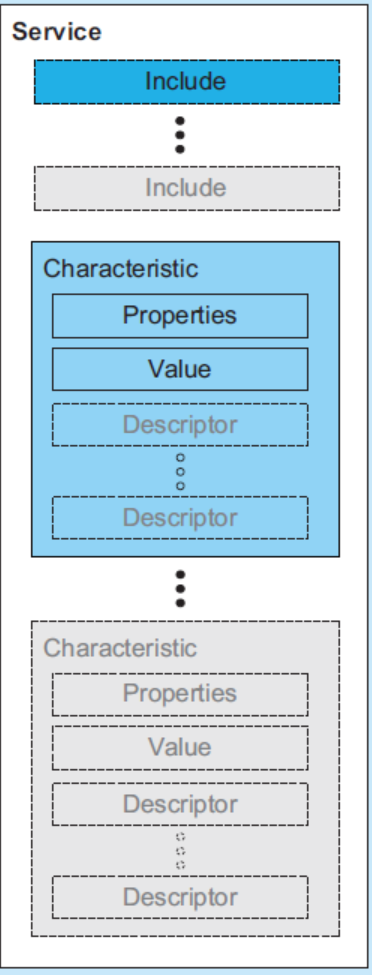
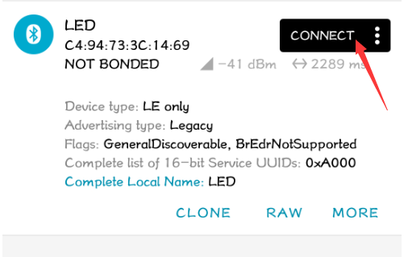
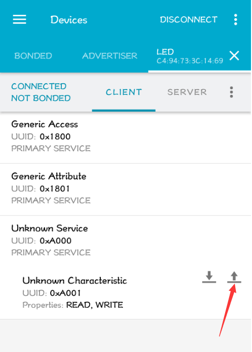
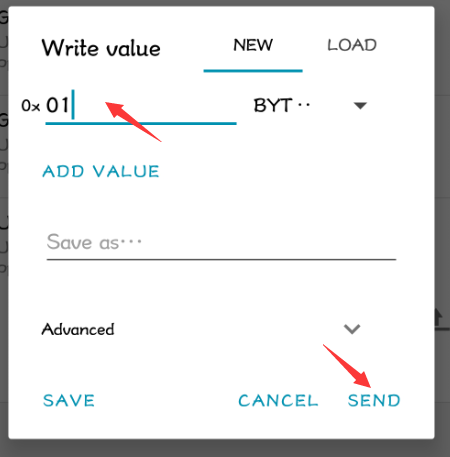
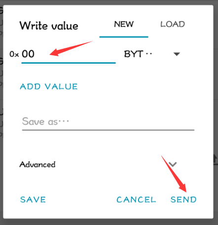

5. mbed-os LEDDemo 介绍
这个工程可以在线上编译器里找到，mbed-os 的官方例程里没有这个。
5.1. mbed-os如何定义一个 GATT Service
根据对 GATT 的理解，一个 GATT Service 包含多个 Characteristic ，Service 和 Characteristic 都有自己的 UUID 来标识，如下图所示：

GattCharacteristic
在 mbed-os 里 GattCharacteristic 类用来表示 Characteristic 。
为了方便使用，mbed-os 根据对 Characteristic 的读/写属性提供了几个更方便使用的类：
ReadOnlyGattCharacteristicWriteOnlyGattCharacteristicReadWriteGattCharacteristicWriteOnlyArrayGattCharacteristicReadOnlyArrayGattCharacteristicReadWriteArrayGattCharacteristic
TODO: 解释带 “Array” 的 Characteristic 。
这些类都是模板类，可以很方便地实现任意类型的 Characteristic Value 值。
LEDService
以 mbed-os-example-ble-LED 例程里实现的 LEDService 为例。
先从 Characteristic 介绍：
class LEDService {
public:
const static uint16_t LED_STATE_CHARACTERISTIC_UUID = 0xA001;
......
private:
ReadWriteGattCharacteristic<bool> ledState;
};
LEDService 定义了一个 ReadWriteGattCharacteristic<bool> 类型的 Characteristic ledState，ledState 可读可写。 true 表示灯亮状态，false 表示灯灭状态， UUID 自定义为 0xA001 。
GattService
接下来看看这个 demo 里如何定义一个 GATT Service 。
class LEDService {
public:
const static uint16_t LED_SERVICE_UUID = 0xA000;
const static uint16_t LED_STATE_CHARACTERISTIC_UUID = 0xA001;
LEDService(BLEDevice &_ble, bool initialValueForLEDCharacteristic) :
ble(_ble), ledState(LED_STATE_CHARACTERISTIC_UUID, &initialValueForLEDCharacteristic)
{
GattCharacteristic *charTable[] = {&ledState};
GattService ledService(LED_SERVICE_UUID, charTable, sizeof(charTable) / sizeof(GattCharacteristic *));
ble.gattServer().addService(ledService);
}
GattAttribute::Handle_t getValueHandle() const
{
return ledState.getValueHandle();
}
private:
BLEDevice &ble;
ReadWriteGattCharacteristic<bool> ledState;
};
在 LEDService 的构造函数初始化列表里，得到了传入的 BLE 协议栈实例的引用，并且根据 Characteristic 的 UUID 和初始状态值构造了 ledState 。
此处的 BLEDevice 是为了兼容较老版本的协议栈，新版本协议栈不建议使用，直接使用 BLE 即可。官方解释如下：
/**
* @deprecated This type alias is retained for the sake of compatibility with
* older code. This will be dropped at some point.
*/
typedef BLE BLEDevice;
第 9，10 行构建了一张 GattCharacteristic 的表，并且用这张表和 UUID 构建了 GATT Service ledService，之后就调用接口 addService() 将 ledService 作为一个 Service 加入了协议栈。
注意，addService() 会为 Service 里的所有 attributes 统一分配 Handle 句柄，因此我们编写程序时想要获得一个 attribute 的句柄，只能调用协议栈提供的接口。就比如获取 ledState Characteristic Value 的 Handle 句柄，就只能调用 ledState.getValueHandle(); 来获得，返回类型是 GattAttribute::Handle_t 。
5.2. LEDDemo 介绍
异步通知
LEDDemo 里也有打广播的流程，这里就不详细介绍了，mbed-os BLE_Advertising 这篇文章里把流程介绍的很详细。
我们来看看 LEDDemo 作为一个 BLE Server 与单纯的打广播有什么不同的地方。
首先在 BLE 协议栈初始化完成后的回调函数里：
/** Callback triggered when the ble initialization process has finished */
void on_init_complete(BLE::InitializationCompleteCallbackContext *params) {
......
_led_service = new LEDService(_ble, false);
_ble.gattServer().onDataWritten(this, &LEDDemo::on_data_written);
......
}
在这里多了创建 _led_service 这个 BLE Service 的步骤，并且调用了 _ble.gattServer().onDataWritten() 这个接口，设置了 client 和 server 建立连接后，client 向 server 写数据这个事件的回调函数，在这个回调函数里实现了 LED 灯的亮灭，也就是所谓的蓝牙点灯。
/**
* This callback allows the LEDService to receive updates to the ledState Characteristic.
*
* @param[in] params Information about the characterisitc being updated.
*/
void on_data_written(const GattWriteCallbackParams *params) {
if ((params->handle == _led_service->getValueHandle()) && (params->len == 1)) {
_actuated_led = *(params->data);
}
}
mbed-os BLE 协议栈还定义了其他类似的事件接口：
onDataSent：注册一个事件回调函数，当 server 发送一个 characteristic value 更新值给 client 时回调该函数。onDataWriten：注册一个事件回调函数，当 client 写了一个 server 的 attribute 之后回调该函数。onDataRead：注册一个事件回调函数，当 client 读取了一个 server 的 attribute 之后回调该函数。onUpdatesEnabled：注册一个事件回调函数，当 client 订阅某个 characteristic 的更新值时回调该函数。onUpdatesDisabled：注册一个事件回调函数，当 client 取消订阅某个 characteristic 的更新值时回调该函数。onConfimationReceived：注册一个事件回调函数，当 client 确认收到了一个 characteristic value 的通知时回调该函数（也就是收到 ATT_HANDLE_VALUE_CFM 这个包的时候）。
广播数据
首先设置广播参数：
广播类型：可连接，不定向
广播间隔：1000 ms
然后设置了广播数据：
| Length | AD Type | AD Data |
|---|---|---|
| 0x01 - «Flags» | BREDR_NOT_SUPPORTED|LE_GENERAL_DISCOVERABLE |
|
| 0x03 - «16-bit Service Class UUIDs» | 0xA000 | |
| 0x09 - «Device Name» | "LED" |
使用示例
WB55 上电后，手机端 nRF Connect 可以看到 LED 设备发送的广播消息，点击 CONNECT ，如下图：

选择 CLIENT，Unknown Service，可以看见这个 Service 的 UUID 为 0xA001，其 value 的属性为可读可写，与我们上面的代码是一样的。点击右边向上的箭头，

会弹出来一个对话框，在这里输入 01，点击发送即给 WB55 发送了一条写命令，值为 0x01，此时会看见 LED2 灯亮。

若发送 0x00 ，则 LED 灯灭。

5.3. 抓包分析
TODO